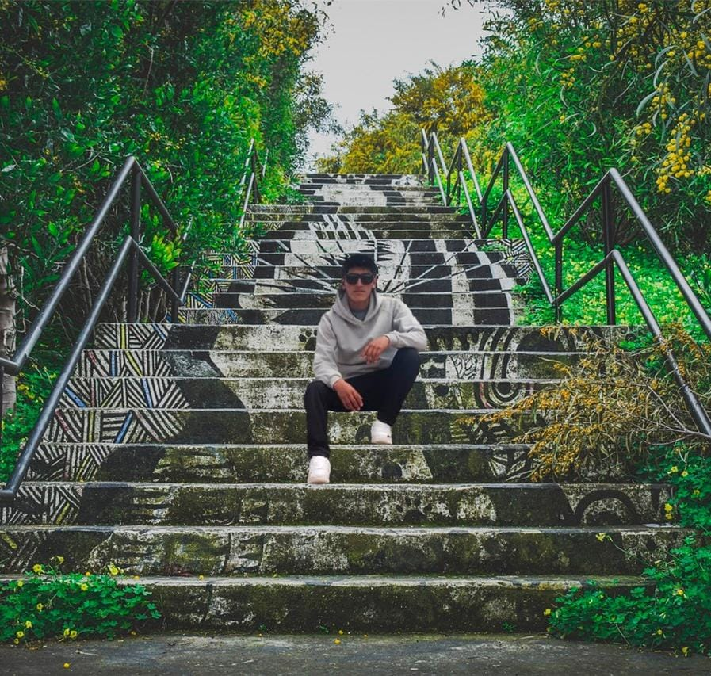

Cargando experiencia 3D...
0%
Tutor: Dr. J. Pablo Luna
gonzaloquispeb@gmail.comUncía, Provincia Rafael Bustillo, Potosí, Bolivia
Abrir en Google MapsEn el corazón de Uncía, capital de la provincia Rafael Bustillo del departamento de Potosí, se levanta la Parroquia de San Miguel: el templo católico que da nombre e identidad religiosa a todo el pueblo. Se encuentra junto a la Plaza 6 de Agosto, muy cerca del Gobierno Autónomo Municipal, y es el punto de referencia espiritual de esta localidad altiplánica, ligada durante generaciones a la minería del estaño. Cada año sus puertas son el punto de partida de la gran fiesta patronal que convierte a Uncía en la Capital Folclórica del departamento de Potosí.
La devoción al Arcángel Miguel no nació en Uncía: llegó con las familias mineras que emigraron desde el pueblo de Aullagas a comienzos del siglo XX, cuando la época de la plata dio paso al auge del estaño. Los pobladores cuentan que la primera imagen del santo se guardó en una capilla del cerro Juan del Valle, antes de que la comunidad la trasladara y entronizara en la naciente iglesia de Uncía. Desde entonces, el interior del templo —con sus altares menores, costeados por generaciones de devotos y pasantes— guarda la memoria de un pueblo que adoptó a San Miguel como propio.
Cada 29 de septiembre, Uncía celebra su fiesta patronal en honor al Arcángel Miguel, una tradición que se remonta a inicios del siglo XX y que en 1973 le valió a la localidad el título de Capital Folclórica del departamento de Potosí. Los preparativos comienzan meses antes, con ensayos, convites, novenas y veladas organizadas por los pasantes, encargados de costear la procesión y los arcos del recorrido. El día central, la imagen del santo recorre las calles antes de presidir el ingreso de más de una decena de fraternidades —Morenada, Diablada, Tundiquis, Waynas, Mineritos, Incas— que bailan su fe ante el pueblo reunido en la Plaza 10 de Noviembre.
Su nombre en hebreo —Mikha'el— puede traducirse como "¿quién como Dios?", una pregunta que resume su papel en la tradición cristiana: el de líder de los ejércitos celestiales. La Biblia lo señala como el arcángel que enfrentó y venció a Lucifer, por lo que el arte religioso lo representa casi siempre como un guerrero, espada o lanza en mano, con el dragón vencido a sus pies. La Iglesia católica lo honra como protector de los fieles, defensor de las almas en la hora de la muerte y guardián de la fe, un título que explica por qué comunidades como Uncía lo eligieron como su santo patrono.